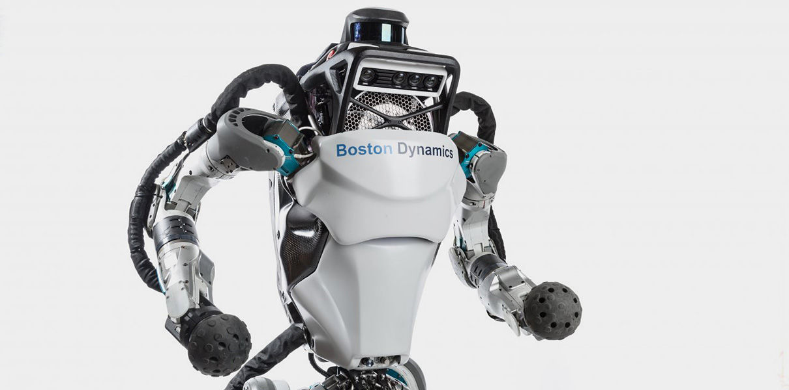

В основе Т-800 — металлический каркас, в общих чертах имитирующий скелет человека. Источник энергии — миниатюрная реакторная установка, расположенная в грудной клетке. Объём грудной клетки может изменяться для имитации дыхания. Гидравлические и электромеханические приводы продублированы резервными системами. Центральный процессор, расположенный в голове, может функционировать в двух режимах: стандартном и расширенном (с возможностью обучения). Расширенный режим отключается при выполнении одиночных заданий, поскольку Скайнет не хочет, чтобы подопечные «много думали»[3]. Вес эндоскелета — 91 кг (200 фунтов)[4].
agfdesggrgrgregasdf
fghfghmhgmdhmh5
dfhdfhhhfdhasfd
dfhdfhhhfdh
dfhdfhhhfdhsdfdsfsd
dfhdfhhhfdhsadf
agfdesggrgrgregasdf
fghfghmhgmdhmh5
dfhdfhhhfdhasfd
dfhdfhhhfdh
dfhdfhhhfdhsdfdsfsd
dfhdfhhhfdhsadf
bad robot

Atlas is the latest in a line of advanced humanoid robots we are developing. Atlas' control system coordinates motions of the arms, torso and legs to achieve whole-body mobile manipulation, greatly expanding its reach and workspace. Atlas' ability to balance while performing tasks allows it to work in a large volume while occupying only a small footprint.
The Atlas hardware takes advantage of 3D printing to save weight and space, resulting in a remarkable compact robot with high strength-to-weight ratio and a dramatically large workspace. Stereo vision, range sensing and other sensors give Atlas the ability to manipulate objects in its environment and to travel on rough terrain. Atlas keeps its balance when jostled or pushed and can get up if it tips over.